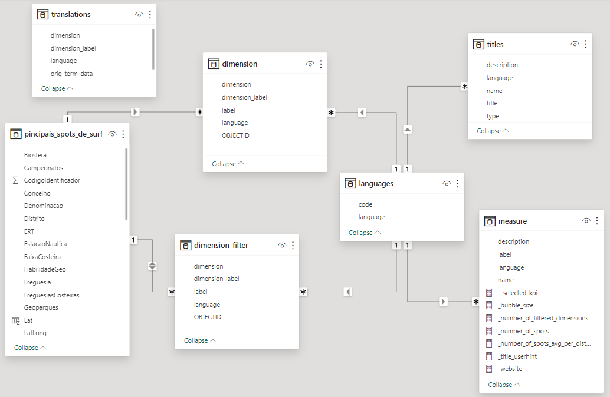
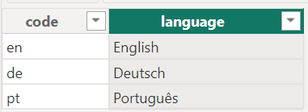
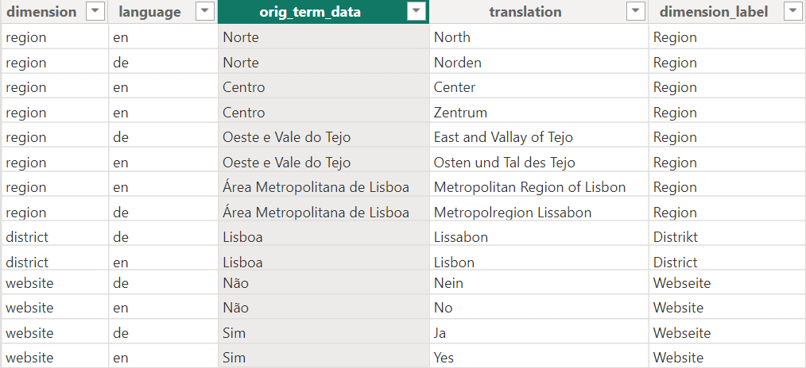

Data model#
Overview#
The data model has seven tables. The tables titles and measure are already discussed in the chapter Key concepts. The table languages contains a list of the three languages English (en), Deutsch (de) and Português (pt) from which the user can choose the preferred language. The small arrows along the lines indicate that titles, measure and dimension and dimension_filter (including translations) are filtered to the selected language. Further information about relationships you find in the article Model relationships in Power BI Desktop.1Model relationships in Power BI Desktop (learn.microsoft.com)

Data files#
You can find all data files in the data directory of the GitHub repository.2github.com/t4d-gmbh/powerbi-example-surfspots
Tables#
principais_spots_de_surf#
The imported CSV file from dados.gov.pt. Since latitude and longitude are stored in one field (separated by a semicolon), they are extracted in two calculated columns. In addition, we create a calculated column that indicates whether a website is available or not. Since the language of the data set is Portuguese, we use Portuguese terms and translate them later on.
Lat = CONVERT(
SUBSTITUTE(TRIM(MID([LatLong], 1, FIND(";", [LatLong])-1)), ",", "."),
DOUBLE
)
Long = CONVERT(
SUBSTITUTE(TRIM(MID([LatLong], FIND(";", [LatLong])+1,10)), ",", "."),
DOUBLE
)
Website_available = IF(
CONTAINSSTRING('pincipais_spots_de_surf'[Website], "http"),
"Sim",
"Não"
)
languages#
This report is available in three languages:

If a new language is added, a translation must also be added for each measure and each title (tables measure and titles). If translations are not yet available for each measure or title, use one of the existing languages provisionally.
dimension#
This is a calculated table. It unpivots the columns OBJECTID, LimitePROT (region), Distrito and Website_available of the table principais_spots_de_surf to the columns OBJECTID, dimension and label. For each language in the table languages a row per OBJECTID and dimension is created. If a translation is available in the table translations, it is used for the label and the dimension_label. If no translation is available, the original language from the data is used (Portuguese).
3Unpivot columns (Power Query)4Let report readers use field parameters to change visuals (learn.microsoft.com)Note
These data transformations can also be done in Microsoft Power Query3Unpivot columns (Power Query) which is a separate software. As already mentioned, in this tutorial we focus on Power BI Desktop.
The idea of this table is to allow users to select a dimension for a visual (for example, the categories on the y-axis in a bar chart). This functionality can also be implemented with Field parameters.4Let report readers use field parameters to change visuals (learn.microsoft.com) See also the note at the end of this page.
dimension_filter#
We use the table dimension for visualizations. For filtering data, we create a second table, a copy of dimension, which gives us more flexibility when creating the report.
dimension_filter = ALL('dimension')
translations#
In this table, the original terms from the table principais_spots_de_surf (Portuguese) are translated into other languages. The translation is optional. If no translation is available for a term, the Portuguese term is used for all other languages (see table dimension).

5Implement data translation using field parametersNote
The translation of data values can also be achieved with the Field parameters feature, which was introduced by Microsoft in 2022. A detailed and helpful description can be found in the article Implement data translation using field parameters.5Implement data translation using field parameters
The approach we use here has the advantage that new languages and translations can be added dynamically without changing the structure of the data model.
However, depending on the use case, the use of Field parameters may be the better solution. In our experience, Field parameters offer better performance, which becomes relevant with larger data models (several hundred megabytes).